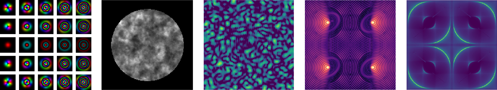

HCIPy: High Contrast Imaging for Python

HCIPy is an open-source, modular Python package for high-contrast imaging on current and future telescopes. By integrating atmospheric simulation, wavefront sensors and coronagraphs in a single library, HCIPy enables both rapid prototyping of individual system elements and the full high-contrast imaging system.
Latest version: 0.7.0